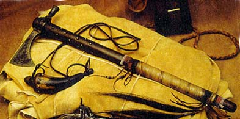
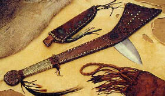

|
|
|||||||||
| Weapons of the Plains Indians are very interesting to a lot of people that like to learn about it. Here are a couple of weapons they had to use. Knives, bows and arrows, tomahawks, gunstock war clubs, and guns. When the Europeans came they found the Native Americans. The Native Americans thought the Europeans had nice weapons like the following: steel knives, swords, fire-belching arquebus and cannons. The Fur Trade had brought lots of weapons for the Indians and the U.S. | |||||||||
| You would be amazed to learn about knives. In any primitive living situation the most important and sough-after tool is the knife. In early life they used the knife about everyday. With a knife you could do the following: put up a dwelling, mend moccasins, clothing, make arrows, skin animals, clean fish, build traps, scrape hides, take scalps, and many more. The knife had never left an Indian man. It would be sheathed at his side or around his neck. It would always be ready in a fight. The hold of the knife was made by a leather or rawhide sheath and sometimes with a wooden out liner. Small knives were held around the neck while big knives were held by belt around your waist. Sometimes old swords that were worn down would be cut down and used as a knife. The blade of a knife would be made from a worn down file. A kitchen knife that had been used for a while might receive a new bone handle. Thousands of blades and finished knives from Europe came from the fur trade. A plain knife just like the butcher and wood-handle "scalpers" found with the Plains Indians. | |||||||||
| There is a lot of history of bows and arrows and here are some of them. Weapons were used for many things like hunting for game and war. Indians would mostly used bows and arrows for hunting game when the U.S. would use their guns. In the early life people were using stone points. But now they have thought of bows and arrows . Indians did not just use bows and arrows they would also use guns, but bows and arrows were the most important to them. Bows and arrows were not just used for wars they were used for hunting game and a gift from the creator. A doctor named J.H. Bill had discovered how the Hopi Indians would put poison on the arrows. By using the livers that rotted and the poison from snakes. When arrows were done they would dip them in plant, and venom poisons. The Indians would put this stuff on the arrows. The tendons after fitting it on the arrows shaft. It would make there body swell up. Removing arrowheads were always hard to get out of the body for a while. The doctor would have to wiggle it out of the body. The wood part of the arrows were made of a branch of a willow tree and spears were made of stone. Arrows were not as heavy as spears were. So then they could carry a lot more of them. They used lots of things to make arrows. Here are the following: shipped stone (flint, obsidian, and more), bones shells, metal, and wood. The Indians always had bows and arrows. They would never run out of them when they went to war. | |||||||||
| Tomahawks were very important to a lot of people and many more reasons. The most ubiquitous symbol was associated with all Native Americans is the tomahawk. However, not very many people were aware of the multiformity of its history. The term "tomahawk" is the definition of the Algonquian word "Tomahak" or "Tamahakan." The definitions of those words would be called to stone0headed implements used as weapons and tools in the early 1600's. The tomahawk does not weight that much. It would only weight around one pound or less. Tomahawks were made by a Indian blacksmith. At the opposite head of the tomahawk was a place for a spiky hammer poll, or most ingeniously, a pipe bowl. The pipe tomahawk became the most popular "hawk" of all of them. It was the |
 |
||||||||
| handle of the tomahawk that had a hollows handle. Many Native Americans used the tomahawks for a weapon. They would use it as a hand weapon and it would act like a missile. Most of the tomahawks made in the early day was made by a sharpened stone that was tied to a wooden handle. They had different kinds of tomahawks like a tomahawk used for ceremonially purpose. It would have like paint and feat hers and more on it. Some of the tomahawks were used to smoke out of too. Just like it would have a handle that would be hallowed with a pipe bowl. | |||||||||
|
 |
The gunstock war club doesn't have mush history, but here is some about it. The gunstock war club was used by both Plains and Woodland regions. The word "gunstock", which is disputed by some, refer to its shape. To the mans long arm, which is a symbol of great powers. This weapon could be held with one or two hands. A heavy blow could be from the bladed side. You could also swing its point first so you could bury it in the enemy. | ||||||||
| Guns I would say were the most important and used by a lot. Firearms were brought to America by the explores that first came. Then they fell into the hand of Indians. The recorded use of the firearms was in June of 1609. In the Little Bighorn the Americans only used guns. Right before they left for battle they gave up the swords. With Indians using repeating rifles and U.S. using single shot. The Indians had more of an advantage to win. The Indians were using a Spencer Carbine that could shoot about seven rounds before they had to reload the guns. While every time the U.S. shot they had to keep reloading. Indians also used a Winchester or a Henry rifle. A 44 Caliber that could hold up to about 16 rounds of ammunition before reloading. They called the guns many name. French people called it Fuke, Furil, and Fusee. And makers would call it Carolina Musket. |
|
||||||||
| As you can see the Indians would use all of the following: knives, bow and arrows, tomahawks, gun stock war club, and guns in hunting, wars and many other reasons. The weapons above were probably one of the most important weapons to the Indians and to the United States in wars. | |||||||||
| Shawn Flach
8th American History Rossville Jr. High 2004 Plains History Project |
|||||||||